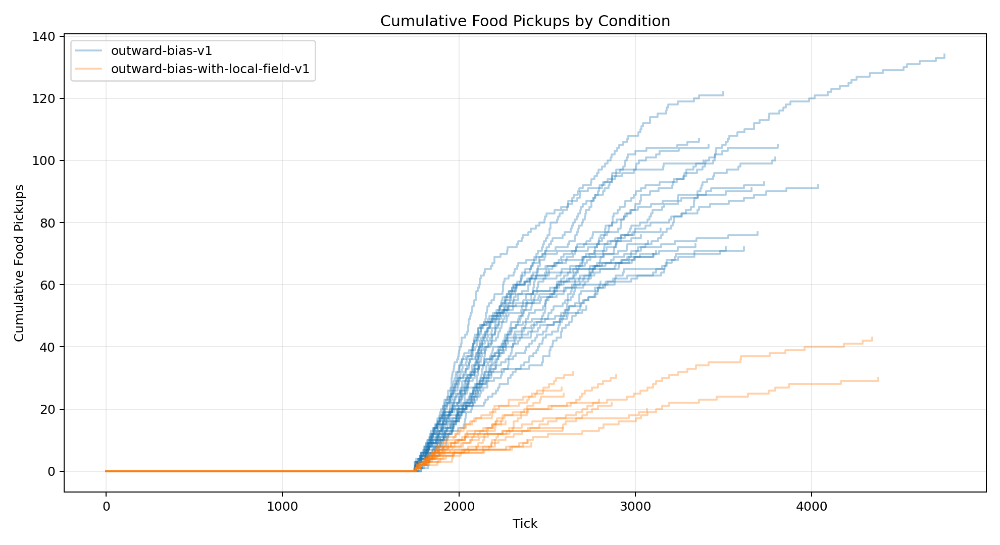
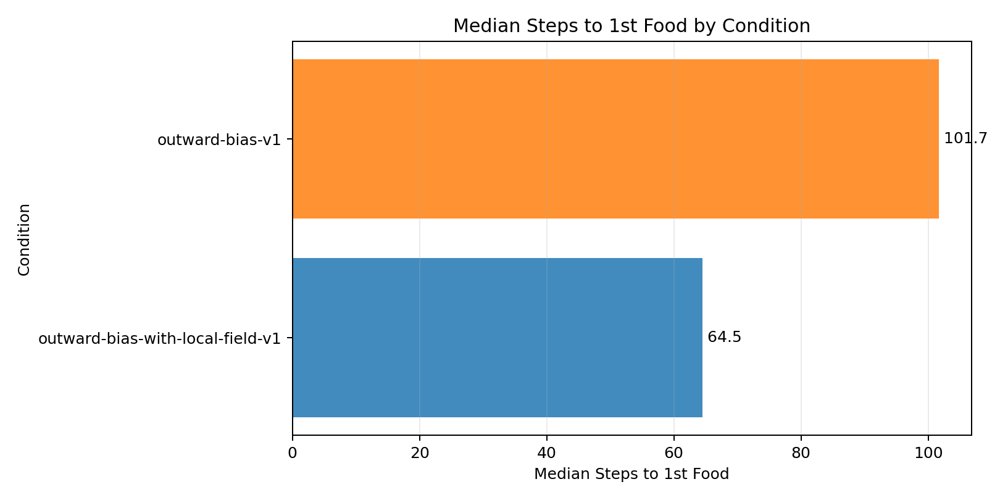
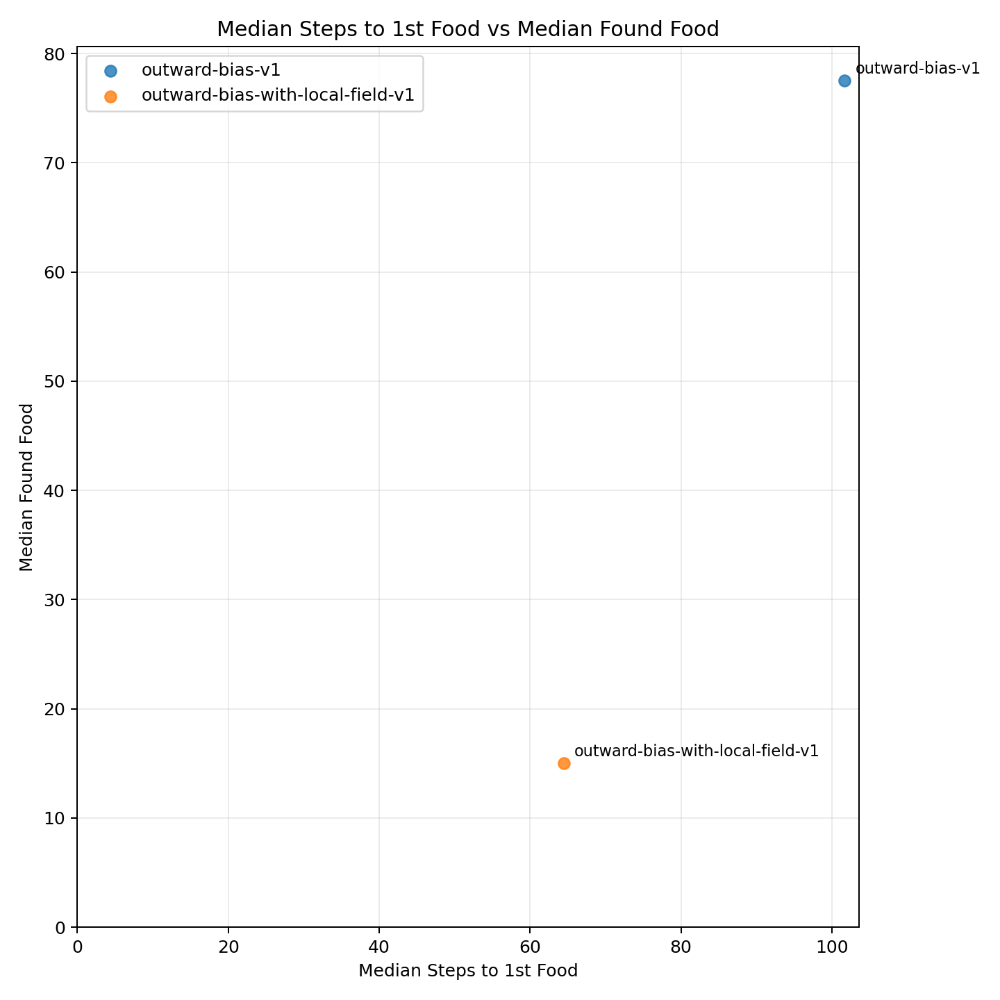
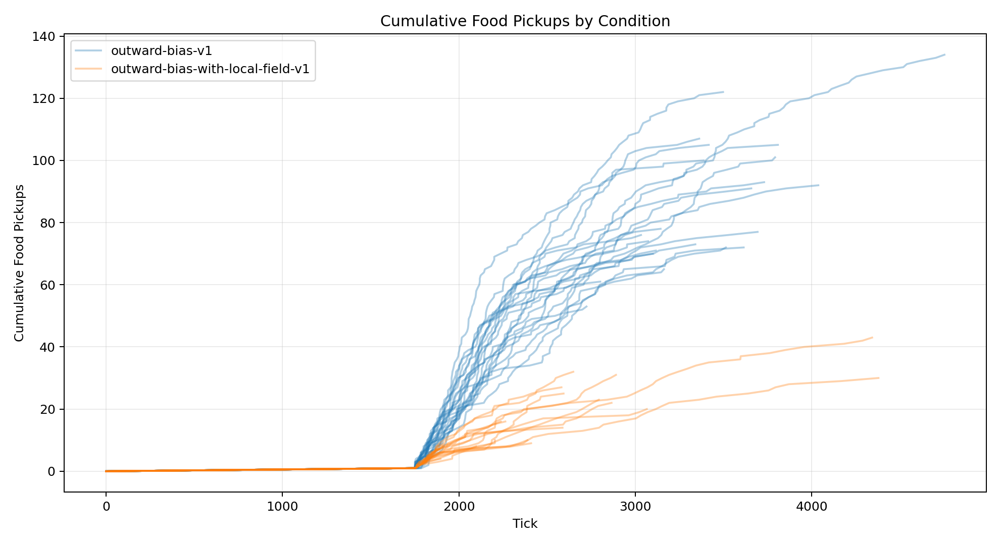
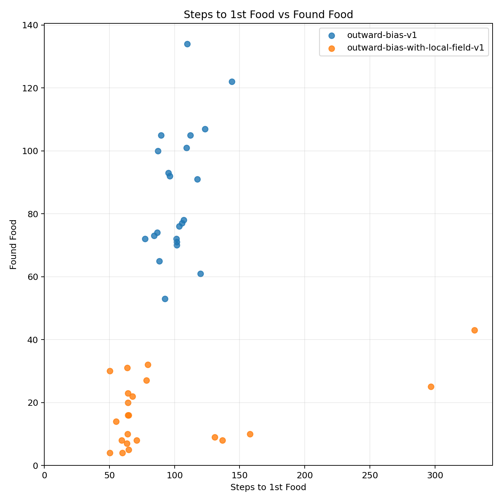
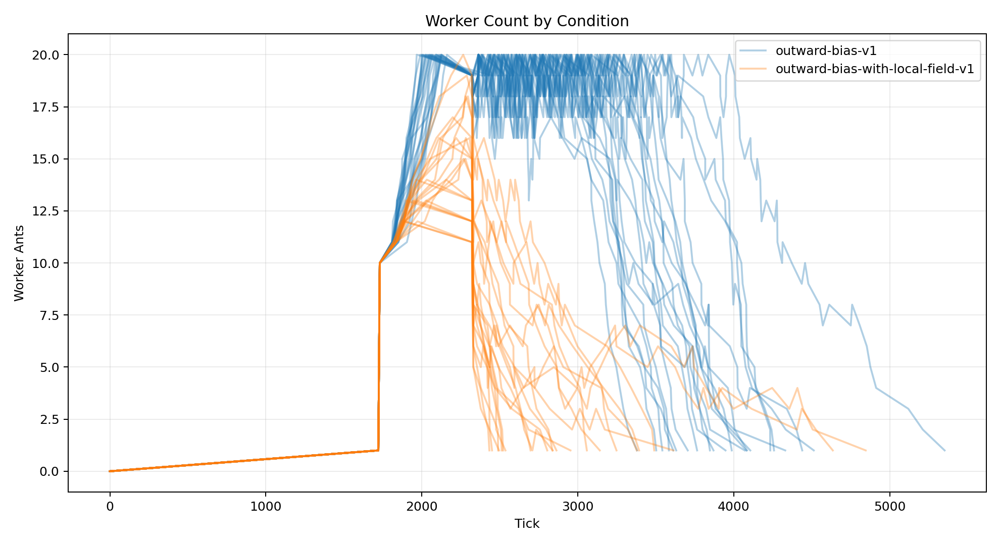

| Condition | Runs |
|---|---|
| outward-bias-v1 | 22 |
| outward-bias-with-local-field-v1 | 22 |
| Metric | Conditions | Min | Max | Average | Median | Mode |
|---|---|---|---|---|---|---|
| analysis.delivered_food | 2 | 16.727 | 81.318 | 49.023 | 49.023 | none |
| analysis.delivered_food_per_day | 2 | 0.488 | 1.940 | 1.214 | 1.214 | none |
| analysis.final_day | 2 | 32.227 | 41.636 | 36.932 | 36.932 | none |
| analysis.final_tick | 2 | 3174.045 | 4113.591 | 3643.818 | 3643.818 | none |
| analysis.found_food | 2 | 16.909 | 86 | 51.455 | 51.455 | none |
| analysis.selected_move_count | 2 | 11847.727 | 33034.318 | 22441.023 | 22441.023 | none |
| analysis.simulation_length | 2 | 1490.045 | 2429.591 | 1959.818 | 1959.818 | none |
| analysis.steps_to_nth_food.1 | 2 | 97.193 | 102.488 | 99.840 | 99.840 | none |
| analysis.steps_to_nth_food.10 | 2 | 19.222 | 58.264 | 38.743 | 38.743 | none |
| analysis.steps_to_nth_food.11 | 2 | 28.444 | 54.750 | 41.597 | 41.597 | none |
| analysis.steps_to_nth_food.12 | 2 | 35.875 | 70.976 | 53.426 | 53.426 | none |
| analysis.steps_to_nth_food.13 | 2 | 19.200 | 57.619 | 38.410 | 38.410 | none |
| analysis.steps_to_nth_food.14 | 2 | 24.600 | 43.067 | 33.833 | 33.833 | none |
| analysis.steps_to_nth_food.15 | 2 | 22 | 66.300 | 44.150 | 44.150 | none |
| analysis.steps_to_nth_food.16 | 2 | 29.750 | 40.600 | 35.175 | 35.175 | none |
| analysis.steps_to_nth_food.17 | 2 | 56.667 | 61.667 | 59.167 | 59.167 | none |
| analysis.steps_to_nth_food.18 | 2 | 62 | 76 | 69 | 69 | none |
| analysis.steps_to_nth_food.19 | 1 | 83.333 | 83.333 | 83.333 | 83.333 | none |
| analysis.steps_to_nth_food.2 | 2 | 49.048 | 62.545 | 55.796 | 55.796 | none |
| analysis.steps_to_nth_food.20 | 1 | 18.500 | 18.500 | 18.500 | 18.500 | none |
| analysis.steps_to_nth_food.21 | 1 | 159 | 159 | 159 | 159 | none |
| analysis.steps_to_nth_food.22 | 1 | 94 | 94 | 94 | 94 | none |
| analysis.steps_to_nth_food.23 | 1 | 25 | 25 | 25 | 25 | none |
| analysis.steps_to_nth_food.24 | 1 | 52 | 52 | 52 | 52 | none |
| analysis.steps_to_nth_food.25 | 1 | 274 | 274 | 274 | 274 | none |
| analysis.steps_to_nth_food.26 | 1 | 198 | 198 | 198 | 198 | none |
| analysis.steps_to_nth_food.3 | 2 | 43.519 | 54.808 | 49.164 | 49.164 | none |
| analysis.steps_to_nth_food.4 | 2 | 59.021 | 59.030 | 59.026 | 59.026 | none |
| analysis.steps_to_nth_food.5 | 2 | 51.774 | 57.425 | 54.599 | 54.599 | none |
| analysis.steps_to_nth_food.6 | 2 | 55.218 | 76.065 | 65.642 | 65.642 | none |
| analysis.steps_to_nth_food.7 | 2 | 44.026 | 63.892 | 53.959 | 53.959 | none |
| analysis.steps_to_nth_food.8 | 2 | 44.417 | 65.415 | 54.916 | 54.916 | none |
| analysis.steps_to_nth_food.9 | 2 | 33.500 | 75.295 | 54.397 | 54.397 | none |
| analysis.steps_to_nth_queen.1 | 2 | 21.511 | 64.269 | 42.890 | 42.890 | none |
| analysis.steps_to_nth_queen.10 | 2 | 16.222 | 44.600 | 30.411 | 30.411 | none |
| analysis.steps_to_nth_queen.11 | 2 | 19.444 | 29.929 | 24.687 | 24.687 | none |
| analysis.steps_to_nth_queen.12 | 2 | 38.667 | 83.375 | 61.021 | 61.021 | none |
| analysis.steps_to_nth_queen.13 | 2 | 18.400 | 103.095 | 60.748 | 60.748 | none |
| analysis.steps_to_nth_queen.14 | 2 | 21.800 | 25.200 | 23.500 | 23.500 | none |
| analysis.steps_to_nth_queen.15 | 2 | 20.200 | 25 | 22.600 | 22.600 | none |
| analysis.steps_to_nth_queen.16 | 2 | 17.250 | 26.400 | 21.825 | 21.825 | none |
| analysis.steps_to_nth_queen.17 | 2 | 30.667 | 44 | 37.333 | 37.333 | none |
| analysis.steps_to_nth_queen.18 | 2 | 15 | 30 | 22.500 | 22.500 | none |
| analysis.steps_to_nth_queen.19 | 1 | 99 | 99 | 99 | 99 | none |
| analysis.steps_to_nth_queen.2 | 2 | 40.186 | 41.684 | 40.935 | 40.935 | none |
| analysis.steps_to_nth_queen.20 | 1 | 17.500 | 17.500 | 17.500 | 17.500 | none |
| analysis.steps_to_nth_queen.21 | 1 | 20 | 20 | 20 | 20 | none |
| analysis.steps_to_nth_queen.22 | 1 | 13 | 13 | 13 | 13 | none |
| analysis.steps_to_nth_queen.23 | 1 | 22 | 22 | 22 | 22 | none |
| analysis.steps_to_nth_queen.24 | 1 | 19 | 19 | 19 | 19 | none |
| analysis.steps_to_nth_queen.25 | 1 | 12 | 12 | 12 | 12 | none |
| analysis.steps_to_nth_queen.26 | 1 | 21 | 21 | 21 | 21 | none |
| analysis.steps_to_nth_queen.3 | 2 | 28.356 | 37.000 | 32.678 | 32.678 | none |
| analysis.steps_to_nth_queen.4 | 2 | 37.490 | 37.646 | 37.568 | 37.568 | none |
| analysis.steps_to_nth_queen.5 | 2 | 38.940 | 44.122 | 41.531 | 41.531 | none |
| analysis.steps_to_nth_queen.6 | 2 | 27.859 | 36.829 | 32.344 | 32.344 | none |
| analysis.steps_to_nth_queen.7 | 2 | 33.333 | 41.413 | 37.373 | 37.373 | none |
| analysis.steps_to_nth_queen.8 | 2 | 29.983 | 36.042 | 33.013 | 33.013 | none |
| analysis.steps_to_nth_queen.9 | 2 | 24 | 47.864 | 35.932 | 35.932 | none |
| day | 2 | 32.227 | 41.636 | 36.932 | 36.932 | none |
| delivered_food | 2 | 16.727 | 81.318 | 49.023 | 49.023 | none |
| egg_hatched | 2 | 18.182 | 45.909 | 32.045 | 32.045 | none |
| egg_laid | 2 | 18.182 | 45.909 | 32.045 | 32.045 | none |
| eggs | 2 | 0 | 0 | 0 | 0 | 0 |
| found_food | 2 | 16.909 | 86 | 51.455 | 51.455 | none |
| players | 2 | 0 | 0 | 0 | 0 | 0 |
| queens | 2 | 1 | 1 | 1 | 1 | 1 |
| randomized_seed | 2 | 1777136860212.227 | 1777137504551.955 | 1777137182382.091 | 1777137182382.091 | none |
| simulation_length | 2 | 1490.045 | 2429.591 | 1959.818 | 1959.818 | none |
| start_tick | 2 | 1684 | 1684 | 1684 | 1684 | 1684 |
| tick | 2 | 3174.045 | 4113.591 | 3643.818 | 3643.818 | none |
| workers | 2 | 0 | 0 | 0 | 0 | 0 |
| world.height | 2 | 274 | 274 | 274 | 274 | 274 |
| world.width | 2 | 160 | 160 | 160 | 160 | 160 |





